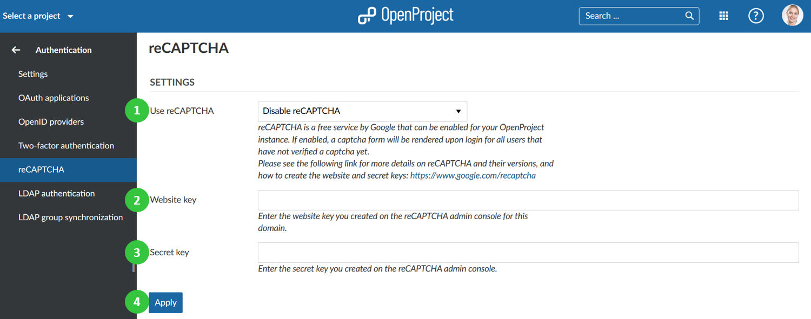

To activate and configure reCAPTCHA for OpenProject, navigate to -> Administration -> Authentication and choose -> reCAPTCHA.
If enabled, a captcha form will be rendered upon login for all users that have not verified a captcha yet. Please see the following link for more details on reCAPTCHA and their versions, and how to create the website and secret keys: https://www.google.com/recaptcha.
You can configure the following options:
